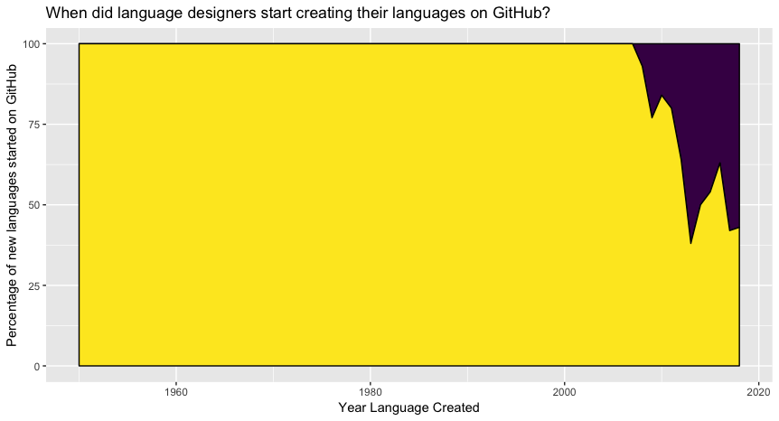

November 9, 2018 — Before GitHub started in 2008, the source code for nascent programming languages was stored in a variety of places. In the early days it was physical media; later on it was publicly accessible servers; and even later it started moving to online source control systems like self-hosted SVN servers or Sourceforce.
But nowadays new language creation happens on GitHub more than anywhere else. Of the 44 languages created in 2008 that I track, 7% were put on GitHub that same year. Last year it was over 50%.

This does not include languages that were created and then moved their source control to GitHub a year or more after their creation. I wanted to know, if you are starting a language, should you create the GitHub project right away? According to the data that is the popular thing to do.
In the future I hope to refine this list to include factors such as whether the language has an origin community and how that affects things. I also hope to add more missing languages to the database, as always.
Data used for this chart:
| appeared | newLangs | repoOnGitHubSameYear | percent |
|---|---|---|---|
| 1950 | 2 | 0 | 0 |
| 1951 | 2 | 0 | 0 |
| 1952 | 1 | 0 | 0 |
| 1953 | 1 | 0 | 0 |
| 1955 | 4 | 0 | 0 |
| 1956 | 3 | 0 | 0 |
| 1957 | 4 | 0 | 0 |
| 1958 | 5 | 0 | 0 |
| 1959 | 6 | 0 | 0 |
| 1960 | 10 | 0 | 0 |
| 1961 | 2 | 0 | 0 |
| 1962 | 2 | 0 | 0 |
| 1963 | 8 | 0 | 0 |
| 1964 | 9 | 0 | 0 |
| 1965 | 5 | 0 | 0 |
| 1966 | 9 | 0 | 0 |
| 1967 | 6 | 0 | 0 |
| 1968 | 9 | 0 | 0 |
| 1969 | 8 | 0 | 0 |
| 1970 | 17 | 0 | 0 |
| 1971 | 6 | 0 | 0 |
| 1972 | 10 | 0 | 0 |
| 1973 | 6 | 0 | 0 |
| 1974 | 10 | 0 | 0 |
| 1975 | 6 | 0 | 0 |
| 1976 | 14 | 0 | 0 |
| 1977 | 13 | 0 | 0 |
| 1978 | 8 | 0 | 0 |
| 1979 | 5 | 0 | 0 |
| 1980 | 18 | 0 | 0 |
| 1981 | 4 | 0 | 0 |
| 1982 | 9 | 0 | 0 |
| 1983 | 13 | 0 | 0 |
| 1984 | 11 | 0 | 0 |
| 1985 | 24 | 0 | 0 |
| 1986 | 23 | 0 | 0 |
| 1987 | 14 | 0 | 0 |
| 1988 | 18 | 0 | 0 |
| 1989 | 13 | 0 | 0 |
| 1990 | 18 | 0 | 0 |
| 1991 | 16 | 0 | 0 |
| 1992 | 16 | 0 | 0 |
| 1993 | 32 | 0 | 0 |
| 1994 | 19 | 0 | 0 |
| 1995 | 27 | 0 | 0 |
| 1996 | 37 | 0 | 0 |
| 1997 | 29 | 0 | 0 |
| 1998 | 17 | 0 | 0 |
| 1999 | 20 | 0 | 0 |
| 2000 | 26 | 0 | 0 |
| 2001 | 32 | 0 | 0 |
| 2002 | 20 | 0 | 0 |
| 2003 | 25 | 0 | 0 |
| 2004 | 33 | 0 | 0 |
| 2005 | 30 | 0 | 0 |
| 2006 | 33 | 0 | 0 |
| 2007 | 30 | 0 | 0 |
| 2008 | 44 | 3 | 7 |
| 2009 | 30 | 7 | 23 |
| 2010 | 19 | 3 | 16 |
| 2011 | 45 | 9 | 20 |
| 2012 | 28 | 10 | 36 |
| 2013 | 26 | 16 | 62 |
| 2014 | 38 | 19 | 50 |
| 2015 | 26 | 12 | 46 |
| 2016 | 27 | 10 | 37 |
| 2017 | 26 | 15 | 58 |
| 2018 | 7 | 4 | 57 |